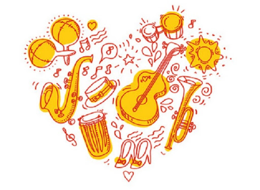

Um site focado na evolução do ritmo: a herança cubana pulsando na música global.

Variadas de diferentes gêneros musicais. Os gêneros como à Salsa, o Ballet, o Reggaeton e o Reparto (música feita só em Cuba).
Música mais escutada no Mundo.
Clássico, Contemporâneo. À Salsa é um clássico como o ponto guajiro, a Dança, o Mambo, Bachata, tudo isso até o Reggaeton.
São cantantes que tem reconhecimento em outros países e conciertos até no Brasil (nativos de Cuba). O cantante mais reconhecido é o Polo Montañez.